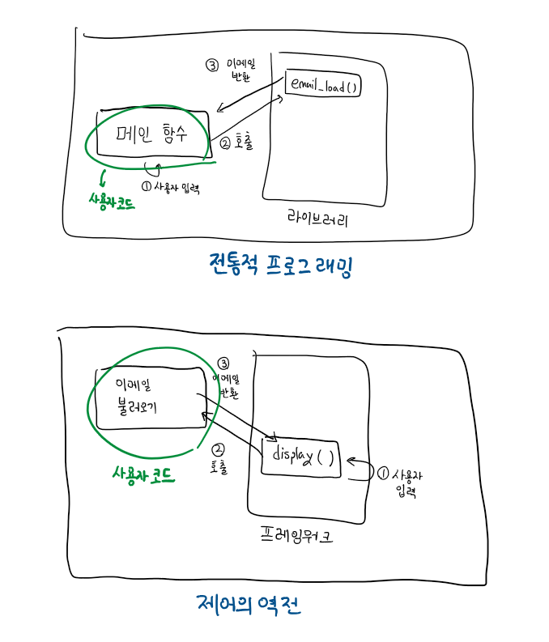
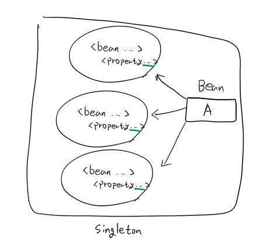
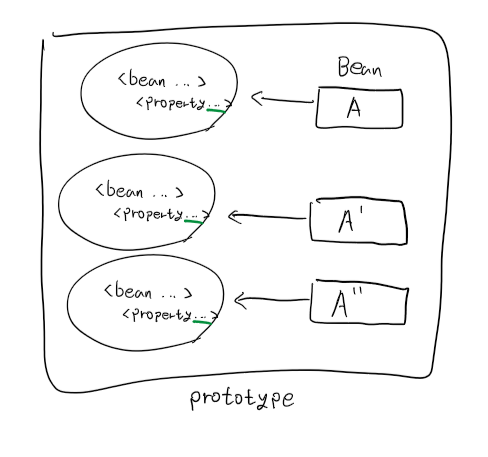
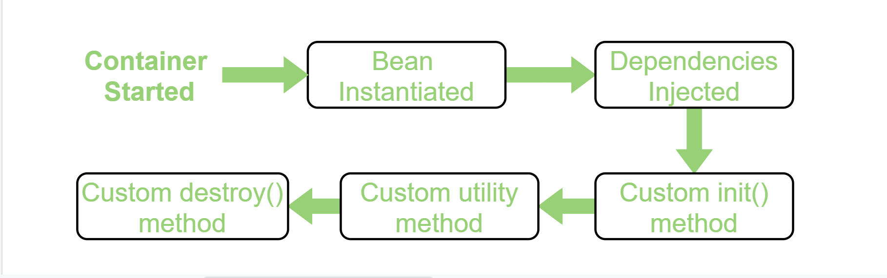

[Spring] IoC와 DI 알아보기
서론
CS 스터디에서 2월 27일에 발표 예정인 IoC와 DI에 대해 정리한 문서를 블로그에 공유하고자 한다.
IoC와 DI란?
IoC (Inversion of Control, 제어의 역전)
제어의 역전 은 사용자가 작성한 코드가 제네릭 프레임워크로부터 제어의 흐름을 전달받는 디자인 패턴을 말합니다.
절차적 프로그래밍에선 사용자의 코드가 일반적인 작업을 위해 라이브러리를 호출하지만, 제어의 역전에선 프레임워크가 사용자의 코드를 호출하게 됩니다.
제어의 역전은 재사용 가능한 코드와 특정 문제를 위한 코드가 애플리케이션에서 함께 동작해도, 독립적으로 개발된다는 의미를 지닙니다.
예시
[기존의 방식]
애플리케이션의 메인 함수가 사용자에게 표시할 명령어들의 목록을 불러오기 위해 메뉴 라이브러리의 함수를 호출합니다.
이후, 사용자가 선택한 명령어를 해당 함수가 반환하고, 메인 함수가 그 값을 토대로 관련된 명령을 실행합니다.
[제어의 역전을 적용한 방식]
애플리케이션을 창 시스템, 메뉴, 마우스 제어와 같은 일반적인 동작 및 그래픽 요소를 알고 있는 프레임워크를 사용해 작성합니다.
해당 애플리케이션이 어떤 메뉴를 제공하고, 해당 메뉴는 어떤 코드 서브루틴을 수행하는지는 사용자가 작성한 코드에 따라 달라지게 됩니다.

Spring에서
Spring에선 이러한 IoC가 본래 의미보다, 애플리케이션 객체에 의해 사용되는 종속성의 구현체에 대한 제어 권한을 프레임워크에게 부여한다는 의미로 사용됩니다.
장점
작업의 실행과 구현의 분리
쉬워지는 구현체 전환(switch)
프로그램 모듈성 향상
테스트의 용이함
컴포넌트들을 격리하거나, 종속성들을 모의 객체로 대체할 수 있어 테스트를 더욱 쉽게 할 수 있습니다.
DI (Dependency Injection, 의존성 주입)
의존성 주입 은 어떤 객체나 함수가 필요로 하는 다른 객체나 함수를 내부에서 생성하는 것이 아닌, 외부에서 전달 받는 프로그래밍 기법입니다.
의존성 주입은 객체를 생성하고 사용하는데 있어 관심사(concern)를 분리하므로써 프로그램이 느슨한 결합(loosely coupled)을 갖도록 하는것을 목표로 합니다.
이러한 관심사 분리를 통해 특정 서비스를 사용하려는 객체나 함수는 해당 서비스가 어떻게 생성되는지 알지 못해도 된다는 것을 보장합니다.
Spring에서
의존성 주입(DI) 은 객체가 그들의 종속성을 정의하는 특수한 형태의 IoC입니다.
이러한 종속성 정의는 생성자 인수, 팩토리 메서드 인수, 인스턴스 내 속성(property)을 통해서만 정의됩니다. 이후 IoC 컨테이너 (BeanFactory, ApplicationContext 등)에 의해 빈이 생성될 때 이러한 의존성들이 주입됩니다.
이 과정은 근본적으로 클래스를 직접 생성하거나, 서비스 로케이터 패턴과 같은 기법을 사용해 종속성의 인스턴스화 및 위치 지정을 제어하는 빈의 반대라고 할 수 있습니다.
유형
Spring에서 의존성을 주입하는 방식으로는 생성자 기반 DI, 설정자 기반 DI, 필드 기반 DI 방식이 있습니다.
이중 생성자 기반 DI 방식이 권장되는데, NPE를 방지 할 수 있고 final 선언이 가능하기 때문입니다.
- 생성자 기반 DI를 사용하는 경우, 필수 의존성들이 세팅되어있지 않은 상황에선 빈을 생성조차 못하기 때문에 NPE이 발생하지 않지만, 나머지 두 방식은 null 상태가 가능하게 됩니다.
- 또한, 생성자 기반 DI 방식을 사용하면 필드를 final로 선언할 수 있어 불변 형태의 이점을 활용할 수 있습니다.
생성자 기반 DI (Constructor)
설정하고자 하는 의존성들을 인수로 받는 생성자를 호출해 의존성을 설정하는 방식입니다.
IoC 컨테이너는 인수들의 타입, index와 같은 attribute를 토대로 의존성을 주입합니다.
@Component
public class Water {
private final TeaBag teaBag;
public Water(TeaBag chamomile) {
this.teaBag = chamomile;
}
}
설정자 기반 DI (Setter)
no-args 생성자 또는 no-args 정적 팩토리 메서드를 통해 빈을 인스턴스화 한 후 설정자를 호출해 의존성을 설정하는 방식입니다.
@Component
public class Milk {
private Cereal cereal;
@Autowired
public void setCereal(Cereal cereal) {
this.cereal = cereal;
}
}
필드 기반 DI (Field)
@Autowired 애너테이션으로 필드를 표시해 의존성을 주입하는 방식입니다.
객체를 생성하는 동안 빈을 주입할 생성자, 설정자가 없는 경우 IoC 컨테이너는 Reflection을 이용해 주입하게 됩니다.
- Reflection을 사용하기 때문에 더 많은 비용이 들고, 종속성을 추가하기 쉽기 때문에 종속성을 늘릴 수록 단일 책임 원칙을 위배할 가능성이 커지므로 다른 방식에 비해 권장되지 않습니다.
@Component
public class Juice {
@Autowired
private Orange orange;
}
특정 기능을 하는 클래스가 하나인 경우 Bean 대신 구체 클래스를 사용해도 되지 않나?
구체 클래스를 직접 사용해도 되지만, 이러한 방식은 코드 자체를 변경하지 않으면 동작 방식을 변경할 수 없다 는 단점이 존재합니다.
그리고 이러한 단점은 아래와 같은 단점들을 유도합니다.
만약 Bean을 사용하게 된다면, 프로그램의 결합도를 낮추고 코드 유연성을 높일 수 있으며 테스트가 더욱 용이해집니다.
결합도 증가
구체 클래스를 직접 사용하게 되면, 해당 클래스와 이를 사용하는 클래스 간 결합도가 높아지게 되고, 이는 코드의 변경을 힘들게 만듭니다.
유연성 감소
특정 구현에 직접적으로 의존하게 되면, 해당 구현을 변경 및 확장하는데 어려움을 겪게됩니다.
테스트의 어려움
구체 클래스를 직접 사용하게 되면 이를 모의 객체로 대체하기 어려워 테스트가 복잡해집니다.
Spring의 Bean 생성 주기
Bean의 생성 범위(scope) 공식 문서
빈 정의(bean definition)를 생성할 때 마다, 빈 정의에 정의된 클래스의 인스턴스를 생성하는 레시피를 함께 생성하게 됩니다.
빈 정의(bean definition): XML과 같은 configuration에 작성하는 bean의 metadata 입니다.
인스턴스를 만들어 낼 수 있는 레시피로 이를 활용해 하나에서 많게는 여러 개의 인스턴스를 생성할 수 있습니다.
빈 정의 안에는 생성된 객체에 연결된 다양한 종속성과 설정 값 뿐만 아니라 객체의 범위 역시 제어할 수 있습니다.
Spring의 경우 6개의 scope를 지원하며, 이 중 4개는 web-awareApplicationContext를 사용하는 경우에만 사용할 수 있습니다. 또한, 커스텀 scope도 만들 수 있습니다.
| Scope | Description |
|---|---|
| singleton | (Default) 빈 정의의 범위를 각 IoC 컨테이너의 단일 객체 인스턴스로 지정합니다. 해당 빈에 대한 모든 요청은 캐시된 동일한 객체를 반환합니다. |
| prototype | 빈 정의의 범위를 원하는 수 만큼의 객체 인스턴스로 지정합니다. 즉 컨테이너에서 요청할 때 마다 다른 인스턴스를 반환합니다. |
| request | 빈 정의의 범위를 단일 HTTP 요청 생명 주기로 지정합니다. 즉 각 HTTP 요청은 객체 인스턴스를 갖고 있습니다. |
| session | 빈 정의의 범위를 HTTP 세션의 생명 주기로 지정합니다. |
| application | 빈 정의의 범위를 ServletContext 의 생명 주기로 지정합니다. |
| websocket | 빈 정의의 범위를 Websocket의 생명 주기로 지정합니다. |
singleton

singleton으로 등록된 빈은 컨테이너가 단일 인스턴스로 생성해 관리하며, 해당 빈에 대한 모든 요청은 캐시된 동일한 객체를 반환합니다.
해당 객체에 대한 수정은 객체에 대한 다른 모든 참조에 영향을 줍니다.
XML
...
<bean id="personSingleton" class="org.baeldung.scopes.Person" scope="singleton"/>
Annotation
...
@Bean
@Scope("singleton")
// 또는 @Scope(value = ConfigurableBeanFactory.SCOPE_SINGLETON)
public Person personSingleton() {
return new Person();
}
prototype

prototype으로 등록된 빈은 컨테이너에서 해당 빈에 대한 요청이 들어올 때 마다 다른 인스턴스를 반환합니다.
다른 scope들과 달리, Spring은 prototype 빈의 전체 생명 주기를 관리하지 않습니다.
IoC 컨테이너는 prototype 객체를 인스턴스화 하고 의존성 주입한 뒤, 클라이언트에게 넘겨주고 더 이상 관리하지 않습니다.
따라서 초기화 생명 주기 콜백(init())은 scope에 관련 없이 모두 잘 동작하지만, 파괴 생명 주기 콜백(destroy())은 prototype 객체에서 호출되지 않습니다.
- 따라서 클라이언트 코드는
prototype객체를 cleanup 하고 객체가 보유한 자원들을 해제하도록 해야 합니다.
XML
...
<bean id="personPrototype" class="org.baeldung.scopes.Person" scope="prototype"/>
Annotation
@Bean
@Scope("prototype")
// 또는 @Scope(value = ConfigurableBeanFactory.SCOPE_PROTOTYPE)
public Person personPrototype() {
return new Person();
}
Bean의 Lifecycle
빈은 Spring IoC 컨테이너에 의해 관리됩니다.
IoC 컨테이너에 의해 빈이 인스턴스화 되고, 의존성이 주입되고, IoC 컨테이너가 종료된 후 빈은 파괴됩니다.

출처: https://www.geeksforgeeks.org/bean-life-cycle-in-java-spring/
이 과정에서 인스턴스화 이전, 파괴 이전 실행하고 싶은 코드가 있다면 생명주기 콜백 함수인 init(), destroy() 메서드 내부에 작성할 수 있습니다.
생명주기 콜백 함수를 작성하는 방법은 크게 3가지 방법이 존재합니다.
XML
XML파일의 빈 정의 내부에 사용할 사용자 정의 init() 및 destroy()를 등록하는 방식입니다.
이후 해당 XML 설정을 불러오는 IoC 컨테이너를 생성하고, 이를 close() 하게되면 init()/destroy() 함수가 호출되게 됩니다.
[예시]
<beans>
<bean id="hw" class="beans.HelloWorld"
init-method="init" destroy-method="destroy"/>
<!-- init-method/destroy-method에 사용자 정의 init()/destroy() 함수의 이름을 등록합니다 -->
</beans>
Interface
빈이 InitializingBean, DisposableBean을 상속하게 한 뒤, afterPropertiesSet(), destroy() 메서드를 재정의하도록 하는 방식입니다.
이렇게 하면 IoC 컨테이너는 빈의 생성 전, 컨테이너가 파괴된 후 해당 함수들을 호출하게 됩니다.
내부적으로 Spring 프레임워크는 BeanPostProcessor 의 구현체를 사용해 적절한 메서드들을 호출할 수 있는 콜백 인터페이스들을 처리합니다.
이 방식은 Spring 프레임워크와 코드를 불필요하게 결합시키는 측면이 있어, Spring에서도 XML을 사용하거나 애너테이션을 사용하는 방식을 권장합니다.
[예시]
public class AnotherExampleBean implements InitializingBean {
@Override
public void afterPropertiesSet() {
// do some initialization work
}
}
public class AnotherExampleBean implements DisposableBean {
@Override
public void destroy() {
// do some destruction work (like releasing pooled connections)
}
}
Annotation
빈으로 등록될 클래스의 메서드에 @PostConstruct, @PreDestroy 애너테이션을 달아주면 해당 빈이 인스턴스화되기 전, 컨테이너가 파괴된 후 해당 메서드들이 실행되게 됩니다.
이를 사용하기 위해선 CommonAnnotationBeanPostProcessor 빈을 등록하거나, Configuration XML 파일 내에서 <context:annotation-config/> 을 사용해야 합니다.
[예시]
import javax.annotation.PostConstruct;
import javax.annotation.PreDestroy;
// HelloWorld class
public class HelloWorld {
// 빈이 인스턴스화 되었을 때 자동으로 실행되도록
// 애너테이션을 달아줍니다.
@PostConstruct
public void init() throws Exception
{
System.out.println(
"Bean HelloWorld has been "
+ "instantiated and I'm the "
+ "init() method");
}
// 스프링 컨테이너(=IoC 컨테이너)가 종료되면
// 자동으로 실행되도록 애너테이션을 달아줍니다.
@PreDestroy
public void destroy() throws Exception
{
System.out.println(
"Container has been closed "
+ "and I'm the destroy() method");
}
}
참고문서
- Inversion of control - Wikipedia
- Dependency injection - Wikipedia
- Introduction to the Spring IoC Container and Beans :: Spring Framework
- Inversion of Control and Dependency Injection with Spring | Baeldung
- Dependency Injection :: Spring Framework
- 1. Introduction to Spring Framework
- Bean life cycle in Java Spring - GeeksforGeeks
- Bean Scopes :: Spring Framework
- Customizing the Nature of a Bean :: Spring Framework
- Quick Guide to Spring Bean Scopes | Baeldung